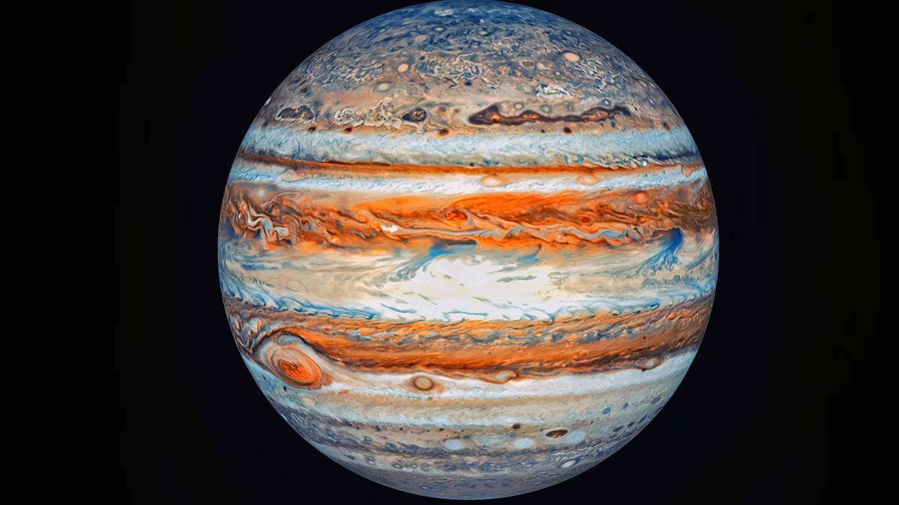
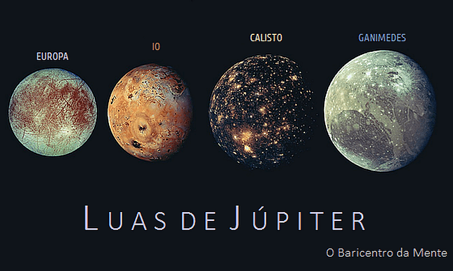
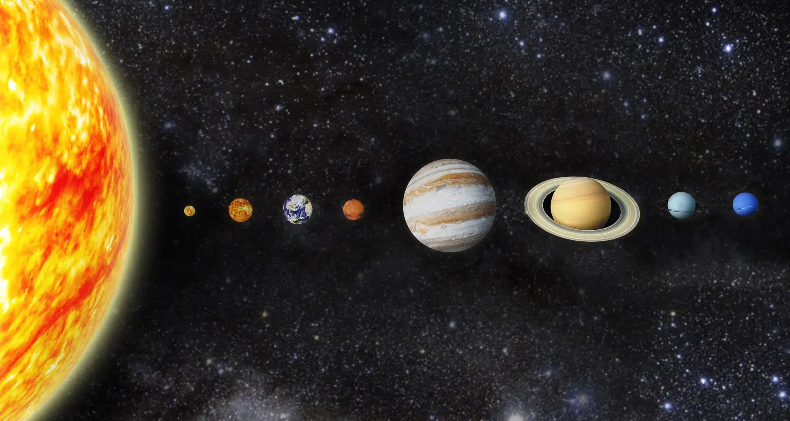
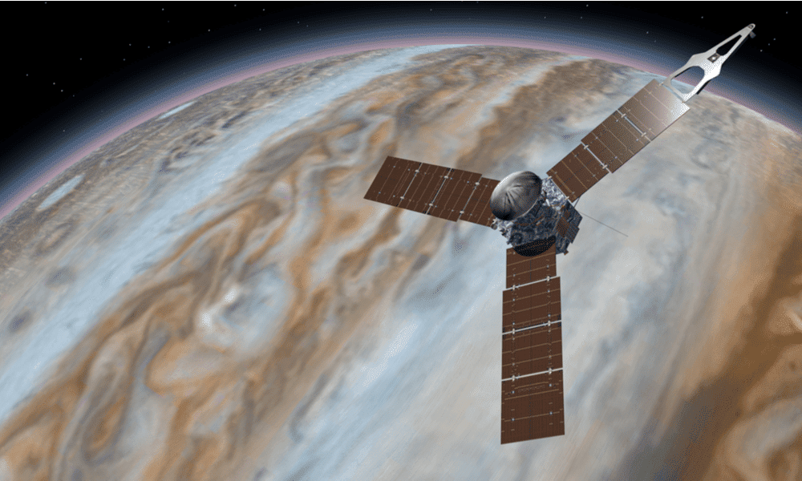

O planeta Júpiter trata-se do quinto planeta do Sistema Solar, participando do grupo dos planetas gasosos. Foi batizado com esse nome em homenagem ao governante do Olimpo, Júpiter, o principal deus da mitologia romana.
A gravidade do planeta Júpiter é de 24,79 m/s², pouco mais de duas vezes a gravidade da Terra.
Devido ao seu grande tamanho e massa que proporciona uma grande atração gravitacional, o planeta Júpiter possui 67 satélites naturais, tendo como mais conhecidos as luas de Métis, Adrástea, Amalteia, Tebe, Io, Europa, Ganimedes, Calisto, Leda, Himalia, Lisitea, Elara, Ananke, Carme, Pasifaé e Sinope .
Seu diâmetro equatorial é de 142.984 km, e sua circunferência é de 439.264 km. Graças a seu grande tamanho, o planeta é considerado o maior do sistema solar.
A atmosfera de Júpiter é composta de hidrogênio e hélio, tendo, ainda, traços de metano, amônia, vapor d'água e outros componentes a uma temperatura de 103ºC. Além disso a atmosfera do planeta é dividida em diversas faixas determinadas por sua latitude resultando em turbulência e tempestades.
Apesar de sua distância, foram emitidas 6 sondas que visavam identificar elementos da atmosfera e tirar fotos do planeta. As sondas perteceram aos programas de Pioneer, VOyager, Ulysses, Galileu, Cassini e New Horizons, entre os anos de 1973 e 2000.
